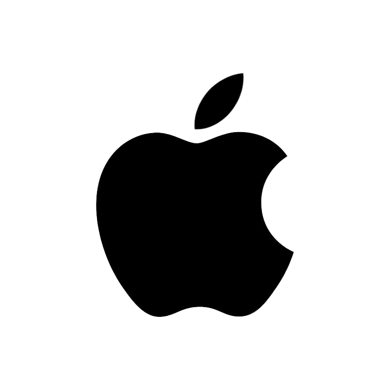

- Steven Paul Jobs born in February 24, 1955 San Francisco, California, U.S.
- Died on October 5, 2011 (aged 56) Palo Alto, California, U.S.
- Cause of death Neuroendocrine cancer
- Resting place Alta Mesa Memorial Park
- Occupation Entrepreneur Industrial designer Investor Media proprietor
- Years active 1975–2011
- Known for Pioneer of the personal computer revolution with Steve Wozniak Co-creator of the Macintosh, iPod, iPhone, iPad, and first Apple Stores
- Net worth US$7 billion (September 2011)[1]
- Title Co-founder, Chairman, and CEO of Apple Inc. Primary investor and Chairman of Pixar Founder, Chairman, and CEO of NeXT
- Board member of The Walt Disney Company[2] Apple Inc.
- Spouse(s) Laurene Powell (m. 1991)
- Partner(s) Chrisann Brennan (1972–1977)
- Relatives Mona Simpson (sister)

Steve Jobs
American business magnate, industrial designer, investor, and media proprietor